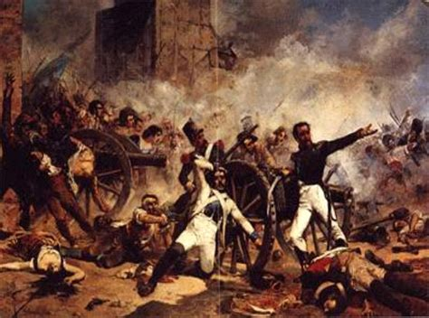
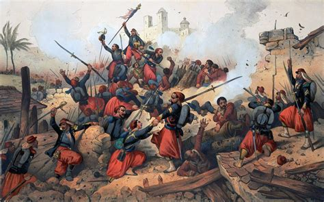
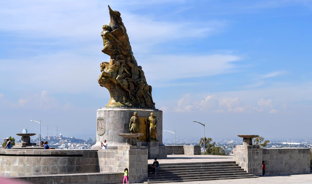
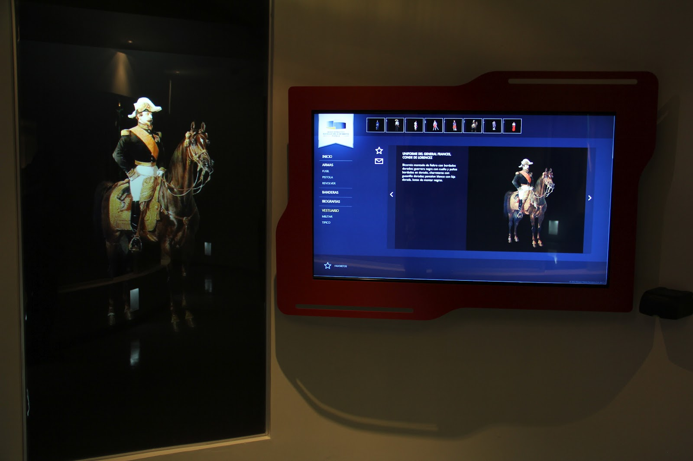
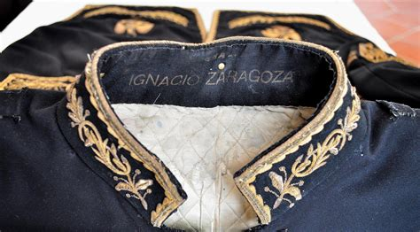

Batalla de Puebla


150 Aniversario
Videos conmemorativos referentes al 150 Aniversario de la Batalla de Puebla.
Videos conmemorativos referentes al 150 Aniversario de la Batalla de Puebla.
Un 4 de mayo de 1862, Atlixco, enfrenta una batalla en contra de conservadores que pretendían sumarse al Ejército Francés.
La Batalla de Atlixco tuvo lugar el 4 de mayo de 1862 en las inmediaciones de la Hacienda de las Traperas en Atlixco en el estado de Puebla, México, entre elementos del ejército mexicano de la república.
Al mando de los generales Antonio Carvajal y Tomás O'Horan contra las tropas al servicio del Segundo Imperio Mexicano comandadas por el general José María Cobos y de Leonardo Márquez, compuesta de soldados conservadores mexicanos en apoyo de envío de refuerzos para llevar a cabo la Batalla de Puebla, durante la Segunda Intervención Francesa en México.
Esta batalla culminó con una victoria republicana y debido a esto el grupo conservador de Márquez no pudo lograr su objetivo de auxiliar a las tropas francesas del Conde de Lorencez en la batalla de Puebla.

¿Sabías que hay un libro que narra este suceso maravilloso? Puedes adquirirlo en la siguiente página.
HISTORIA MEXICANA
Enmarcada en la segunda intervención francesa, la Batalla de Puebla enfrentó al ejército invasor con el comandado por el general Ignacio Zaragoza.
Una lucha entre una fuerza imperial compuesta de seis mil 48 efectivos, bien equipada y entrenada, contra un ejército de cuatro mil 700 combatientes, en su mayoría veteranos, más la ayuda de algunos civiles armados
La Batalla de Puebla se libró del medio día hasta las cinco de la tarde, con un desastroso saldo final para el bando francés, que acabó con 476 muertos y 345 heridos. En cambio el ejército mexicano solo tuvo 83 bajas, 131 heridos y 21 desaparecidos.
La derrota ante la resistencia mexicana generó en la población del país invasor una reacción de histeria y decepción.
Sin embargo, como todo en la vida, la revancha está presente y los franceses solicitaron refuerzos a Napoleón III para ejecutar un exitoso contraataque, para así lograr una victoria que erigió el Segundo Imperio Mexicano a cargo de Maximiliano de Habsburgo.
Haz clic aquí para más información:
6 Datos Interesantes de la Batalla del 5 Mayo
Este conflicto armado tiene su origen a su vez en otra disputa, la Guerra de Reforma, librada por conservadores y liberales, éstos últimos liderados por Benito Juárez, quienes lograron sobreponerse y llegar a la presidencia.
La Guerra de Reforma provocó una seria escasez de recursos, misma que motivó al mandatario Benito Juárez a suspender por dos años los pagos de la deuda externa, y así recuperar la economía del país.
El 31 de octubre de 1861, representantes de Francia, España y Gran Bretaña se reunieron en Londres para establecer un ultimátum y exigir la reanudación del pago que ascendía a 80 millones de dólares.
Al no recibir una respuesta, amenazaron con una invasión a las fronteras que se concretó el cinco de marzo de 1862, cuando un contingente francés llegó a las costas mexicanas. Para el cinco de mayo ya estaban en la ciudad de Puebla y ahí se desató la contienda más importante.

El Monumento a la Victoria (5 de mayo) fue hecha por el escultor y pintor mexicano Ernesto Tamariz.
El Monumento Emblemático del 150 Aniversario de la Batalla de Puebla se ubica en una explanada al noreste del Centro Histórico de la ciudad. Se trata de un espacio que va de la escultura vertical a la horizontal, impulsando la convivencia mediante los intersticios que surgen de la elevación premeditada de los niveles del sitio

El interactivo narra las acciones militares y contiene las biografías de héroes nacionales como Ignacio Zaragoza, a través de pantallas táctiles, proyecciones en 3-D y contenidos interactivos descargables en dispositivos.
Este espacio está dotado de tres salas que detallan la riqueza histórica de Puebla, que te transportan a los lugares donde la batalla se llevó a cabo.
El Museo y Biblioteca General Ignacio Zaragoza está dedicado a una parte de la historia del Ejercito Mexicano, al general Ignacio Zaragoza y a la gesta de la Batalla de Puebla (5 de mayo de1862). Está ubicado en la calle 4 Poniente número 516 esquina 7 Norte del Centro histórico de Puebla y anexo al templo del ex Hospital de Nuestra Señora de Belén.

Famoso militar mexicano que participó en la batalla de Puebla, cuando las fuerzas francesas de Napoleón III invadieron México para imponer como emperador a Maximiliano de Habsburgo, con el rango de general y al mando del Ejército de Oriente.
En octubre de ese año, varios alumnos se dirigieron a ver al gobernador del Estado y solicitarle su ingreso al ejército nacional. Porfirio Díaz estaba en ese grupo, y los cadetes fueron asignados al Batallón de San Clemente.
Participó en la Guerra de Reforma y contra la Intervención Francesa. En la batalla del 5 de mayo en Puebla, aseguró el triunfo de los mexicanos al dar alcance con la caballería, junto con el Gral. Porfirio Díaz, a las tropas francesas en retiradas.
Durante la Segunda Intervención Francesa en México, Negrete hizo a un lado su ideología conservadora y participó en la defensa del territorio mexicano, ante el avance de las tropas francesas hacia el centro de México, Negrete reacciona y se pone de parte del bando liberal con su célebre frase "Yo tengo Patria antes que Partido".